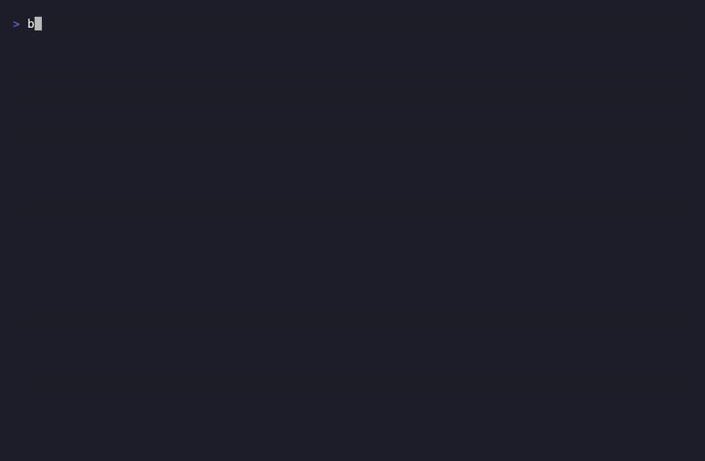

Deterministic evaluation: (intent, state, policy) → ALLOW | DENY. OxDeAI controls execution, not behavior.
No authorization → no execution.
Agents propose actions. OxDeAI decides if they are allowed to execute. Without this boundary, agent systems are not production-safe.
Agents can call APIs, provision infrastructure, move money. You need a boundary that holds before any side effect occurs.
Four outcomes. No path to execution without a valid authorization artifact.

No valid authorization → no execution path.
The Policy Decision Point (PDP) decides. The Policy Enforcement Point (PEP) enforces. The Verifier checks trust. Execution is impossible without authorization.
AuthorizationV1 artifact issued.trustedKeySets.trustedKeySets
must be configured explicitly by the verifier. In strict mode, missing
key sets →
TRUSTED_KEYSETS_REQUIRED.
A valid signature from an unknown issuer still fails closed.
Properties derived directly from the protocol spec and conformance tests.
(intent, state, policy) inputs
produce identical outputs across runtimes, restarts, and replicas.
Policy-critical logic has no ambient randomness or shared mutable state.
ReplayStore. Nonce window tracking per agent.
Durable backends (Redis, Postgres) drop in without changing the guard API.
TOCTOU tests are part of the conformance suite.
trustedKeySets must be configured by the
verifier. In strict mode, missing key sets →
TRUSTED_KEYSETS_REQUIRED. A valid
signature from an unknown issuer still fails closed.
VerificationEnvelopeV1 draft) with
state snapshots and event sequences.
One function intercepts all proposed actions. Execution only proceeds if the policy allows it.
import { PolicyEngine } from "@oxdeai/core";
import { OxDeAIGuard, OxDeAIDenyError } from "@oxdeai/guard";
// 1. Initialize the Policy Decision Point (PDP)
const engine = new PolicyEngine({
policy_version: "v1.0.0",
engine_secret: process.env.OXDEAI_ENGINE_SECRET,
authorization_ttl_seconds: 60,
authorization_signing_alg: "Ed25519",
authorization_signing_kid: "k1",
});
// 2. Create the Policy Enforcement Point (PEP)
const guard = OxDeAIGuard({
engine,
getState: () => getAgentState(),
setState: (s) => setAgentState(s),
trustedKeySets: [myKeySet], // trust is explicit, never implicit
onDecision: (record) => auditLog(record),
});
// 3. Every action goes through the guard
try {
await guard(
{
name: "charge_wallet",
args: { amount: 100, currency: "usd" },
context: { agent_id: "agent-001" },
},
async () => chargeWallet(100) // only runs if ALLOW
);
} catch (err) {
if (err instanceof OxDeAIDenyError) {
// DENY — execution did not occur
}
}import { verifyAuthorization, createVerifier } from "@oxdeai/core";
// Inline: strict mode requires trustedKeySets
const result = verifyAuthorization(artifact, {
mode: "strict",
trustedKeySets: [myKeySet],
expectedPolicyId: "policy-production-v1",
});
// A valid signature from an unknown issuer → still fails closed
// Missing trustedKeySets in strict mode → TRUSTED_KEYSETS_REQUIRED
// Bound verifier: pre-configure trust once, reuse everywhere
const verifier = createVerifier({
trustedKeySets: [myKeySet], // required, non-empty
expectedIssuer: "oxdeai-pdp",
});
// Verify envelope produced by the engine after a run
const envelopeResult = verifyEnvelope(envelopeBytes, {
mode: "strict",
trustedKeySets: [myKeySet],
expectedPolicyId: "policy-production-v1",
});
if (envelopeResult.status === "ok") {
// audit trail is intact and cryptographically verified
}import { createDelegation } from "@oxdeai/core";
import { OxDeAIGuard } from "@oxdeai/guard";
// Parent agent narrows authority to a child agent
const delegation = createDelegation(parentAuth, {
delegatee: "child-agent-002",
scope: {
tools: ["provision_gpu"],
max_amount: 300n, // strictly narrowed from parent
},
expiry: parentAuth.expiry, // cannot exceed parent
kid: "key-001",
privateKey: signingKey,
});
// Child guard verifies chain + scope before execution
await guard(
action,
async () => provisionGpu(),
{
delegation: { delegation, parentAuth },
// Replay prevention via pluggable ReplayStore
// (default: in-memory; swap for Redis/Postgres)
}
);
// delegation_id consumed atomically — replay → OxDeAIAuthorizationError
All adapters delegate to @oxdeai/guard.
Identical inputs produce identical authorization decisions across all of them.
Cross-adapter conformance validated in CI: same intent + state + policy → same decision across all adapters.
OxDeAI is open source, Apache-2.0 licensed, and ready to drop into any TypeScript agent stack today.